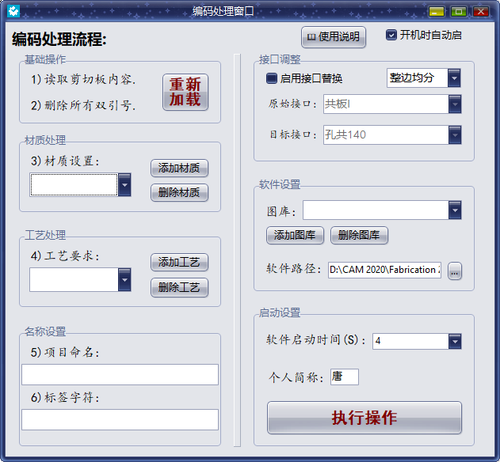
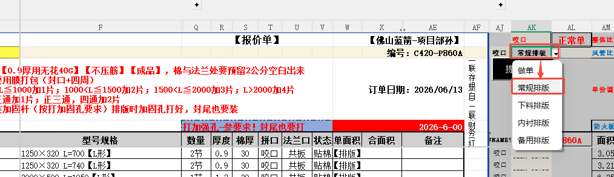
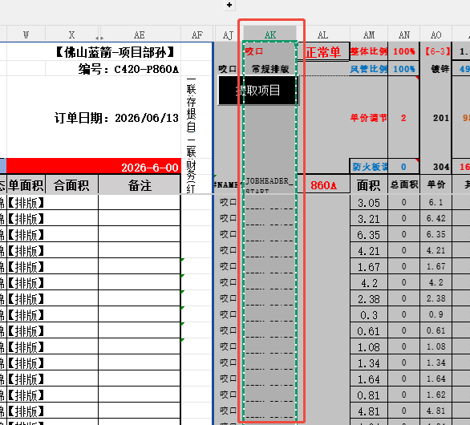
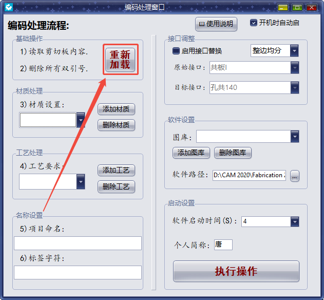

CAMduct
编码处理助手 · 操作流程
📋 一键处理风管排料编码
自动材质替换 · 工艺设置 · 接口批量替换
🖥️ 六大功能区 + 底部执行

编码处理流程 · 接口调整 · 软件设置 · 启动设置
❶ 表格选「常规排版」→ ❷ Ctrl+C 复制编码


❸ 加载剪切板 → ❹ 检查名称和标签

⚙️ 参数五连设
材质 → 工艺 → 图库 → 秒数 → 接口
❿ 点击「执行操作」→ 等待进度 → 悬浮圆标
进度走完自动保存 BM.txt · 窗口缩为右下角悬浮圆标
💾 配置自动持久化
📁 所有设置存入「编码导入数据.ini」
🔄 下次启动自动恢复所有配置
🚀 支持开机自启，配合悬浮窗右下角待命
风管厂技术部
tangguoqi.top